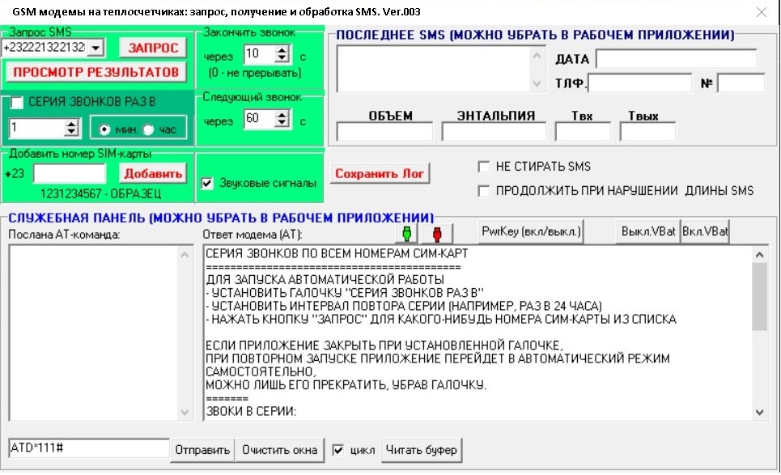

Applications:An old mobile phone that supports the UART interface (like a COM port, but low-voltage) can be used as a GSM modem.

GSM RC is designed
for organizing notification
and remote
control
of electrical equipment in a country house, apartment, and other domestic facilities via GSM channel.
The device uses 15 I/O lines; the number of lines for control and for alarm is determined by the user.
Composition of
GSM
RC
(maximum configuration)
- an old mobile phone
model supporting the UART interface,
- a mobile phone charger or power supply unit,
- a cable connecting the mobile phone and the controller,
-
a controller that controls the mobile
phone and the power unit,
- a power
unit - triacs that
commute the mains voltage to turn the controlled
electrical equipment on/off,
- an adapter for connecting the controller to a computer (if independent
reprogramming of the controller by the customer is required for
individual requirements for the controller functions).
It is possible to purchase the controller separately, as well as the controller with different combinations of components.
Operation
of GSM RC
To control
the electrical equipment, an SMS message containing a control
command is sent to the mobile phone number included in
the GSM RC. Upon receiving the SMS, the mobile phone transmits this
message via cable to the GSM RC controller, which
receives and processes it.
If the SMS message does not contain a command, it is ignored.
GSM RC has 15
outputs, each of which can be connected to either
controlled electrical equipment (see Control) or an alarm
sensor (see Alarm). The choice of the number of pins for control and
for alarm is made during the device ordering stage.
If the rechargeable battery in the mobile phone is connected to the phone connector,
the GSM RC is powered by the mobile phone battery or from an independent power supply unit.
The mobile phone is constantly kept turned on and can be permanently connected to the charger
to compensate for the battery discharge.
If the incoming SMS message contains a command - it is processed and
executed by the GSM RC device.
Control
Upon receipt of an SMS message containing a command to control one or
several devices (for example, turn on the heating for 10 minutes,
watering the garden beds for 15 minutes), GSM RC executes
the command, accompanying it with a call to the phone number from which the
SMS message was sent; the call confirms that a command was detected in the received
SMS message and is being executed.
The user who sent the message monitors the number from which the
call was made without picking up the receiver (in this case, the confirming
call from the mobile phone of the GSM RC will not require
any payment).
Listening
When calling the mobile phone connected to the device GSM RC, the device
performs an automatic connection,
and you can hear what is happening in the phone's location..
The microphone amplifier of mobile phones
has automatic gain control; at low noise levels, quiet sounds will be
audible. Try not to place the mobile phone near
noise sources, such as a refrigerator.
Alarm
Several sensors can be connected to the GSM RC controller; upon their triggering
(opening or closing of contacts), the device will transmit
a corresponding SMS message to the phone number stored in its memory.
The phone number to which the alarm message is transmitted is entered by the user into the memory of the GSM RC ; to do this, you need to send an SMS message with this phone number.
SMS messages
to the
GSM
RC can be transmitted not only from another
mobile
phone but also from a computer connected to the
Internet, from mobile operators' websites, or via the "SMS via
e-mail" service; in the latter case, no confirmation of command receipt via a call is
made.
Sensors can be chosen and installed by the customer - smoke, temperature, humidity sensors, limit switches triggered when opening a door or breaking a glass, vibration, motion sensors, etc.
Determining
the number of control and alarm lines.
Fifteen
I/O lines of GSM RC can operate
both as output lines for control and as input lines for
alarm. The user can independently determine the number of lines allocated for alarm maintenance; the remaining lines will work
for control. The choice of the number of lines for alarm is performed
by sending an SMS message to the phone to which the GSM RC is connected. This same SMS message
transmits the time in minutes from
the moment the device is turned on until the alarm is armed - this time
is necessary for you to turn on the alarm and have time,
for example, to close the door with one of the alarm sensors before
an SMS message about the alarm triggering is sent.
When
the alarm is triggered,
an SMS message of the following format will be sent to the phone number stored in the memory of GSM RC:
14!
where "!" -
an exclamation mark -
is a sign of alarm triggering,
14 - the number of the triggered alarm sensor (possible
numbering:
01 ... 15)
If, for example, 13 is a kitchen window opening sensor, 14 is a room
window, and 15 is
the front door, then the SMS message in the given example informs about the front door opening.
EXPANDING
THE CAPABILITIES
The GSM RC controller is capable
of transmitting information from any
sensors in the form of SMS messages both upon request and at specified
time intervals; this can be, for example, temperature, humidity,
illumination in a greenhouse, water level in a tank, etc. To organize
the transmission of a parameter, it must be sent to the controller. To
organize the corresponding program, a data transmission protocol to the
controller (determined by the type of sensor used) or the parameters of the
analog signal coming from the sensor is needed - the controller has a
built-in 10-bit analog-to-digital converter.
The existing
microcontroller
program can be adjusted according to the customer's wishes,
who
can independently upload it to the controller via the built-in
microcontroller software bootloader; for this, a
computer, an adapter, and a +3.6...+5V power supply unit are required.